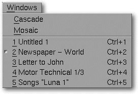

<!-- Documentation XQuad (c)1995-2000 AXENE contact axene@axene.org>
<html>

<head>
<title>Windows Menu</title>
</head>

<body BGCOLOR="#FFFFFF" BACKGROUND="Images/back.gif" TEXT="#000000">

<p ALIGN="right">  </p>

<p><br>
<br>
The Windows menu places document windows in specific configurations for rapid
accessibility. <br>
<br>
</p>

<hr>

<p align="center"><br>
 <br>
<small><i>Screen shot: Windows pulldown menu </i></small></p>

<p><br>
</p>

<hr>

<p><br>
</p>

<h3>The windows menu contains the following options:</h3>

<ul>
  <li><a NAME="cascade_menu_entry"><i>&quot;Cascade&quot;</i> <b>places all the document
    windows in cascading formation</b>. Cascade placement superimposes the windows on top of
    one another with a light diagonal staggering towards the right-bottom, allowing view of
    all the document titles. </a><br>
    &nbsp;</li>
  <li><a NAME="mosaic_menu_entry"><i>&quot;Mosaic&quot;</i> <b>places all the document windows
    in mosaic form</b>. Mosaic placement allows view of all the windows without superimposing
    them; they are organized as evenly as possible on the desktop. </a><br>
    &nbsp;</li>
</ul>

<p><br>
<a NAME="document_menu_entries">The following options correspond to the <b>list of open
documents</b> in XQuad, which lists each document name and arranges them by date. Choosing
an entry from this list selects the corresponding document. The name of the active
document is preceded in the list by a marker. The list is limited to fifteen documents,
although it's possible to open more. </a></p>

<p><br>
</p>

<hr>

<p ALIGN="right"></p>
</body>
</html>
